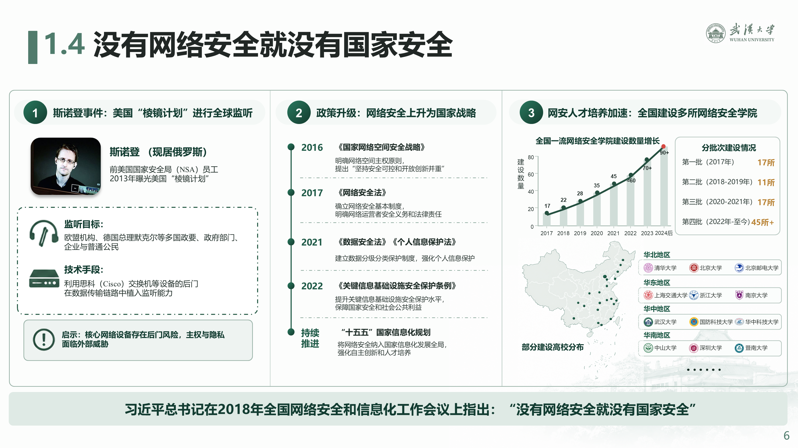
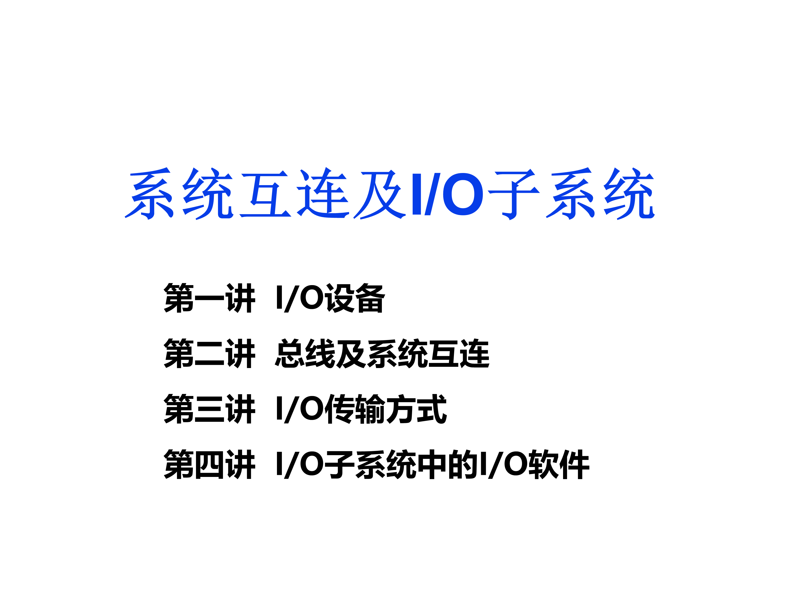
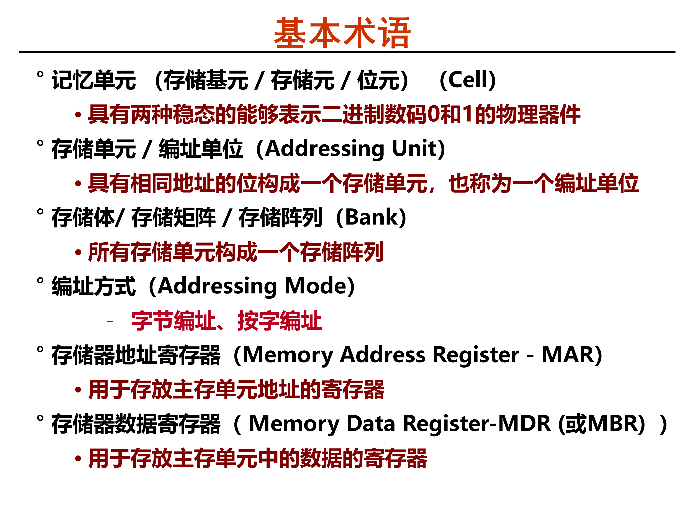
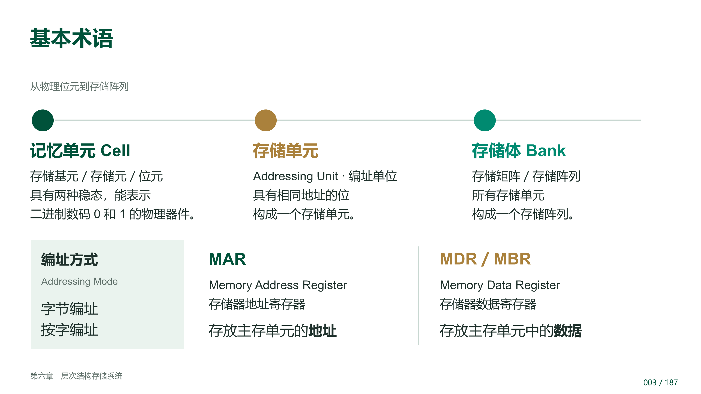
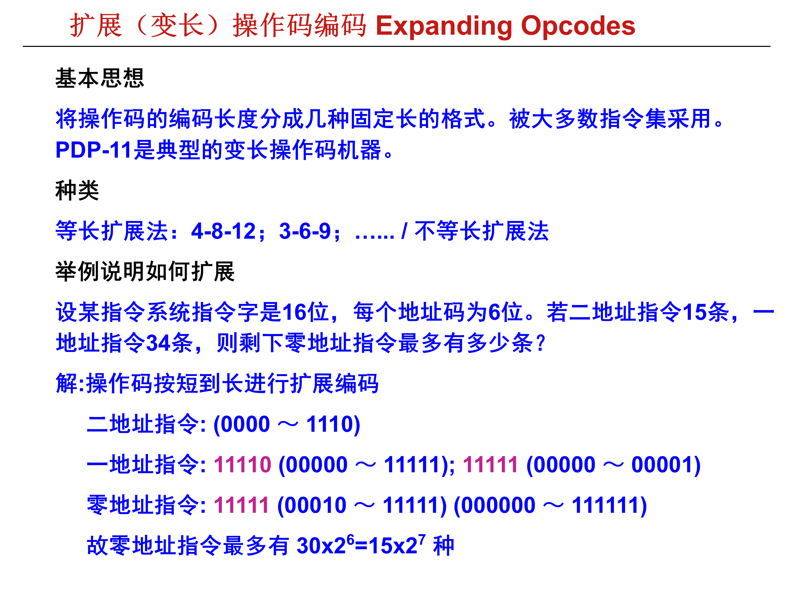
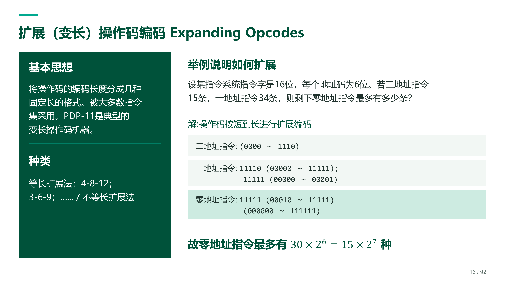
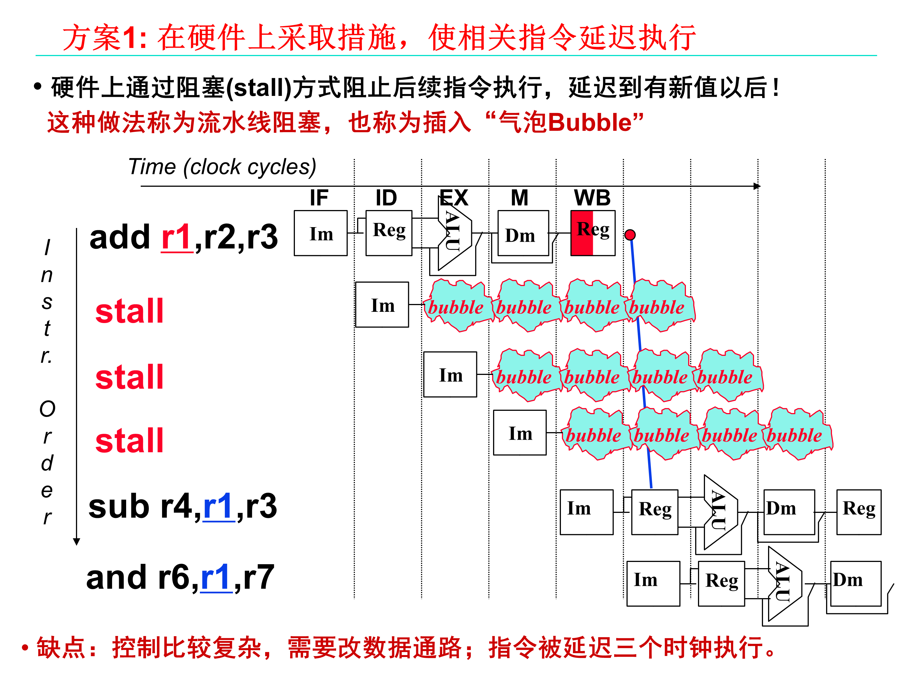
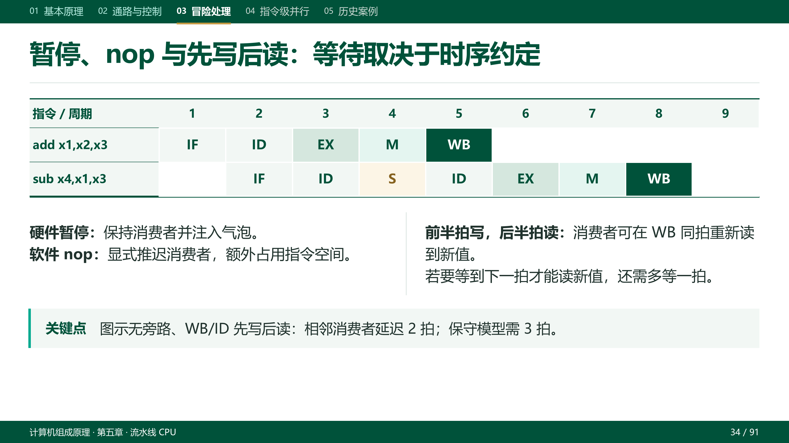

连接本地 Codex 与 Claude
通过各自的本地 SDK 凭据与运行环境接入 Agent；FastPPT 不保存模型 API Key。
FASTRESEARCH / 本地版
把 Agent、画布与版本管理放进一个本地工作台
接入本地 Codex 或 Claude，管理演示文稿项目，并按元素、区域或页面指定修改范围。修改在暂存区执行，通过检查后自动提交；支持前后差异对照与历史回看。

01 / 核心功能
FastPPT 新增的工作台与任务编排能力，让项目、范围、暂存结果和页面版本都有明确入口。
通过各自的本地 SDK 凭据与运行环境接入 Agent；FastPPT 不保存模型 API Key。
创建、打开和切换演示文稿项目；项目具有独立标识和元数据，任务在对应项目工作区内运行。
在浏览器画布平移、缩放并选择元素或框选区域；修改可限定为元素、区域、单页、多页或整套演示稿。
修改在暂存区执行，通过检查后自动提交；支持前后差异对照与历史回看。生成阶段未通过检查的暂存结果可调用 Agent 修复。
查看页面历史，恢复历史版本，并对当前页执行撤销与重做，保留可逆的迭代过程。
按页编辑讲稿，查看成功或失败的导出记录，并从当前项目的导出历史中定位文件。
主题研究、内容规划、页面生成与演示文稿转换沿用 PPT Master 的工作流和工具；FastPPT 在此基础上提供本地工作台、Agent 编排和版本管理。
02 / 工作流程
项目内按范围执行任务，通过检查后自动提交，再回看差异、管理版本或导出。
在独立项目工作区中，使用已配置本地环境的 Codex 或 Claude。
选择修改范围并描述任务；需要审批的任务在执行前确认。
Agent 在暂存区执行修改，通过检查后自动提交并记录版本。
对照修改前后差异，结合页面历史、撤销重做、讲稿与导出记录继续迭代。
03 / 案例预览
以下页面用于展示内容与版式，课件组展示更新前后的页面差异；这些材料不代表由 FastPPT 生成。
计算机组成原理 / 教学课件

计算机组成原理 / 教学课件


计算机组成原理 / 教学课件


计算机组成原理 / 教学课件


04 / 快速开始
工作台默认在本机浏览器中打开，项目文件保存在本地。Codex 与 Claude 使用各自本地 SDK 的凭据和运行环境，FastPPT 不保存模型 API Key。
环境要求：Node.js 22+、pnpm 10、Python 3.10+；建议安装 uv 以同步 Python / PPT 依赖，并配置 Codex 或 Claude 本地环境。
使用模型或联网研究时，相关输入会按所选服务提供方的规则处理。
查看仓库与安装说明QUICK START
git clone https://github.com/FastR-D/FastPPT.git
cd FastPPT
pnpm install
uv sync
pnpm studio